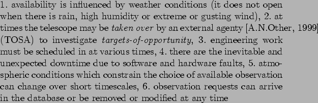

The RCS makes requests to the scheduler at various times for groups of observations to perform. These are then executed and results reported back to the OSS. Observations specified by astronomers who have been allocated time, are stored in the Phase2 Observing Database (ODB) maintained by the OSS. The observation requests include all the information required to perform the observations - target location, instrument selection and configuration, exposure times etc. In addition a number of constraints are specified - time constraints determine when and how often the observations should be performed, observing constraints specify under what environmental conditions the observations may be performed - e.g. only if the target is above a certain elevation or when the seeing is better than a specified level. User-specified QOS metrics define the acceptable levels of observation quality and regularity.
The telescope operates in an uncertain environment

. These factors make it difficult to make long term scheduling commitments with any chance of success.
[Steele and Carter, 1997] have defined a series of ?characteristics? that can contribute to a good schedule. They mention fairness (of time allocations between various committees), efficiency (quality of observations, minimization of idle time) and feasibility (is the target visible).
First version of scheduler [Fraser, 2004] is a simple despatch scheduler which uses an objective function formed using a weighted sum of metrics. Describe the scheduler as candidate selection then application of metrics (leave gory details till later). A full search of the ODB is performed, enabled candidate groups are extracted and scored using a weighted sum of various metrics.
Does it work and how well, what problems - obviously needs imporvment or wouldnt be writing this..
How can we improve.. look at multiobject optimization [Silva et al., 2004] - very interesting. [Bresina et al., 1995] deals with look-ahead and how improves qualities or metrics.
Say what these mean i.e for what will be doing - adaptive/learning, accountable (user-prefs), dispatch, predictive, lookahead, max utility,
i.e. blah blah - an adaptive scheduler will ... use of prediction to estimate likelihood of conditions for boosting future reward.. using dispatch because...the MEU theorem and decision thry....